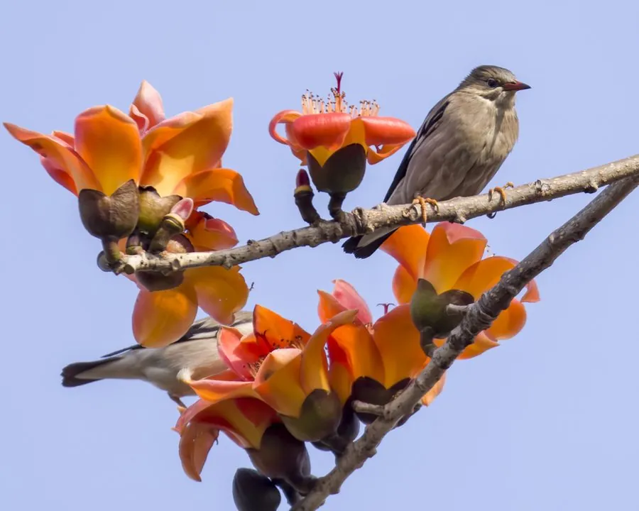

乔木 · 植物界
木棉 Bombax ceiba

华南常见的落叶大乔木，早春先花后叶，花朵大而艳红，果实裂开后飘出白色棉絮，因而被称为“英雄树”。
- 分类
- 门被子植物门纲木兰纲目锦葵目科锦葵科属木棉属
- 栖息环境
- 热带与亚热带干热河谷、平原及村落旁，喜光耐旱，不耐寒
- 地理分布
- 中国广东、广西、云南、福建、海南等地，东南亚与南亚也有分布
- 保护级别
- 暂无评估；中国未列入国家重点保护野生植物名录
物种志
木棉为落叶大乔木，高可达 25 m，树干通直，幼树树干与枝条上密生圆锥状硬刺，老树刺渐脱落；掌状复叶互生，小叶 5–7 枚，长椭圆形。早春先花后叶，花朵单生或簇生于枝顶，直径约 10 cm，花瓣 5 枚、肉质，橙红至鲜红色，雄蕊多数并合生成管；蒴果长圆形，成熟后五裂，内含白色棉絮与黑色种子。
木棉分布于中国华南、西南及东南亚、南亚的热带与亚热带地区，喜光、喜干热气候，耐旱、不耐寒，适宜土层深厚的砖红壤。花大色艳、树姿挺拔，常作为行道树与庭园树，广州、高雄等城市将其选为市花；花可晒干煲汤，棉絮可作枕芯与救生衣填充物，种子可榨油，木材轻软可制浮具。木棉先花后叶、花朵整朵坠落，被赋予英雄气概的象征。
形态与习性
- 株高可达 25 m，胸径可达 1 m
- 花期2–4 月，先花后叶
- 果期5–6 月，蒴果开裂飘出棉絮
- 光照强阳性，喜光不耐阴
- 水分耐旱，怕积水
- 土壤土层深厚的砖红壤或冲积土
- 主要用途行道树、木棉纤维填充、花可入汤
趣味知识
- 木棉的果实裂开后，白色棉絮带着种子随风飘散，棉絮可作枕头填充物。
- 木棉花掉落时是整朵坠地，花瓣厚实、不易散开，因此有“英雄花”之称。
- 木棉幼树的树干和枝条上长满硬刺，成年后这些刺会逐渐脱落。
- 广州、高雄等城市把木棉定为市花，木棉也是中国南方常见的行道树。